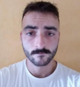

|  |
Eñaut ETCHEPAREBORDE |
| 2016 Bayonne |
Baccalauréat Scientifique (Mention Assez bien) Lycée Bernat Etxepare |
| 2016 Ciboure |
BAFA (Brevet d’Aptitude aux Fonctions d’Animateur) CEMEA |
| 2021 Bidart |
Diplôme ingénieur (Conception numérique et innovation) ESTIA / Wolverhampton |
Olaberria
Dessinateur moules à injection thermoplastique
-Dessiner les moules des clients sur TopSolid selon le cahier des charges client.
-Préparer et imprimer les plans 2D pour l’atelier.
-R&D : Chercher un moteur pour piloter une aiguille à obturation
-Suivre les avancées des projets en réunion et à l’atelier
Perkain
Animateur/Entraîneur de pelote
Kanbar
Serveur/Runner
Aribit-Baudry
Manoeuvre
-Pelote à Main Nue et sport en général (course à pied, foot, escalade, randonnée…)
-Rencontrer des personnes des tous horizons et échanger
-Musique + lecture + cinématographie